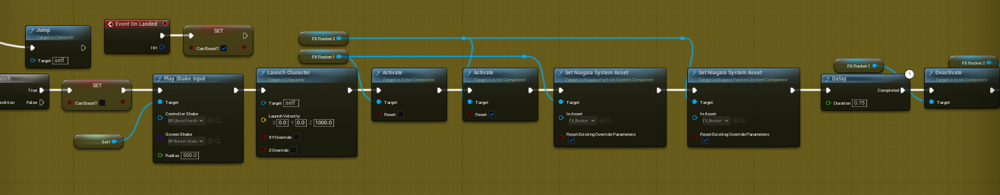
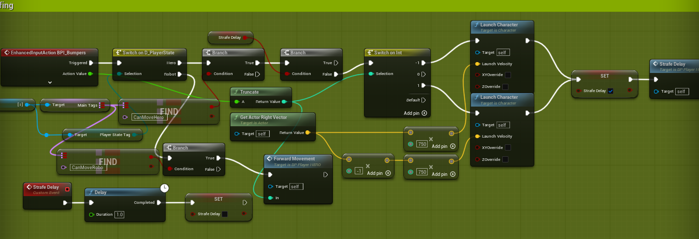
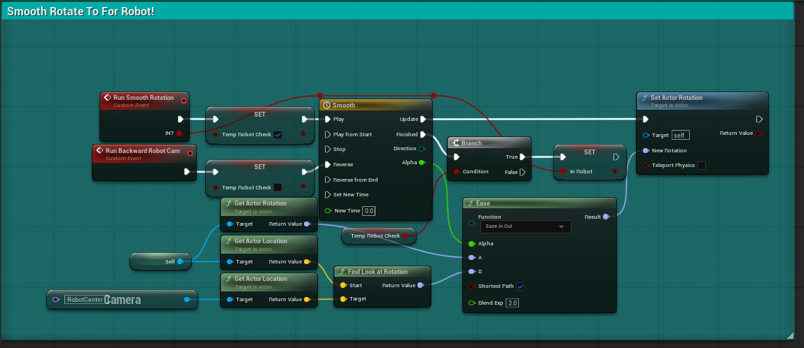
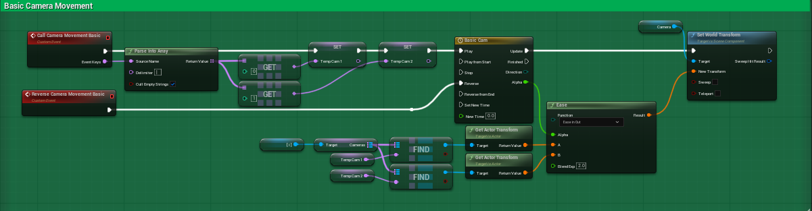
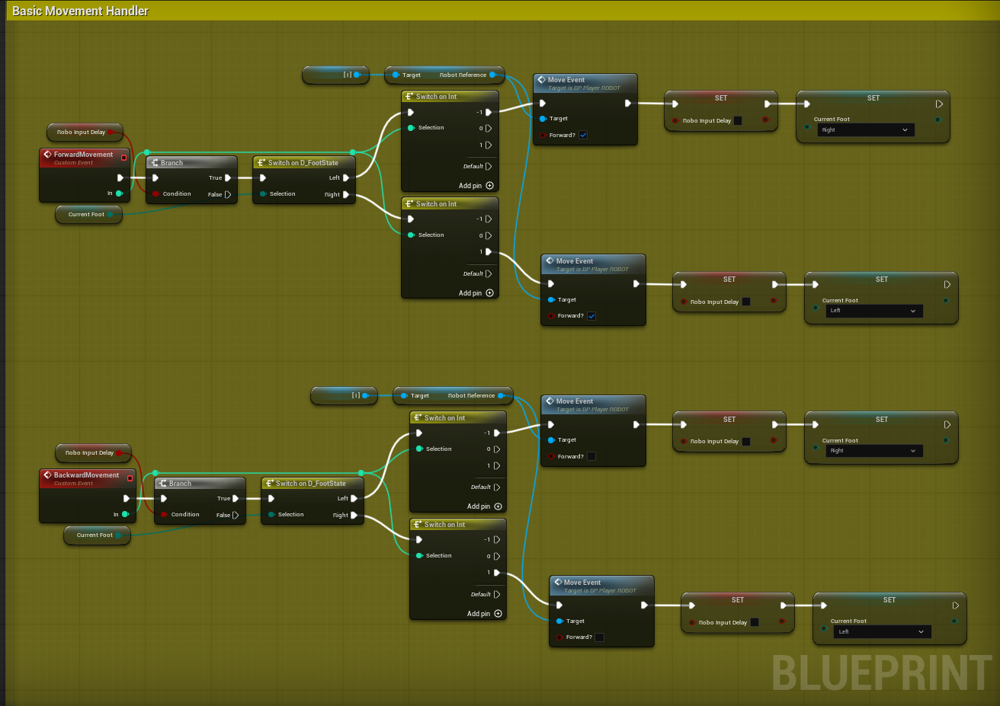
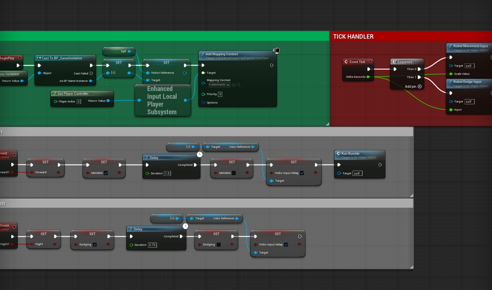
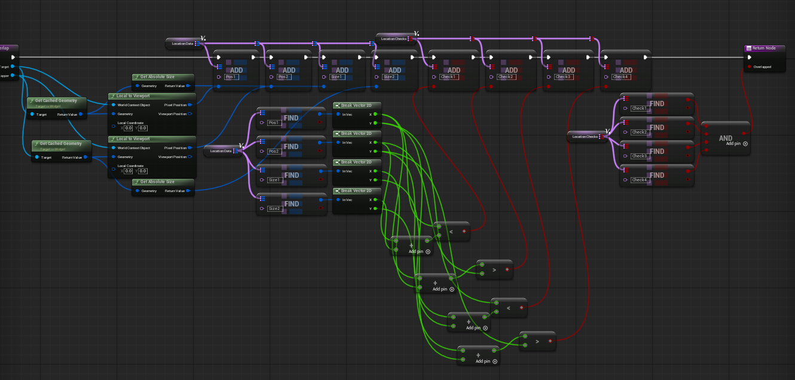
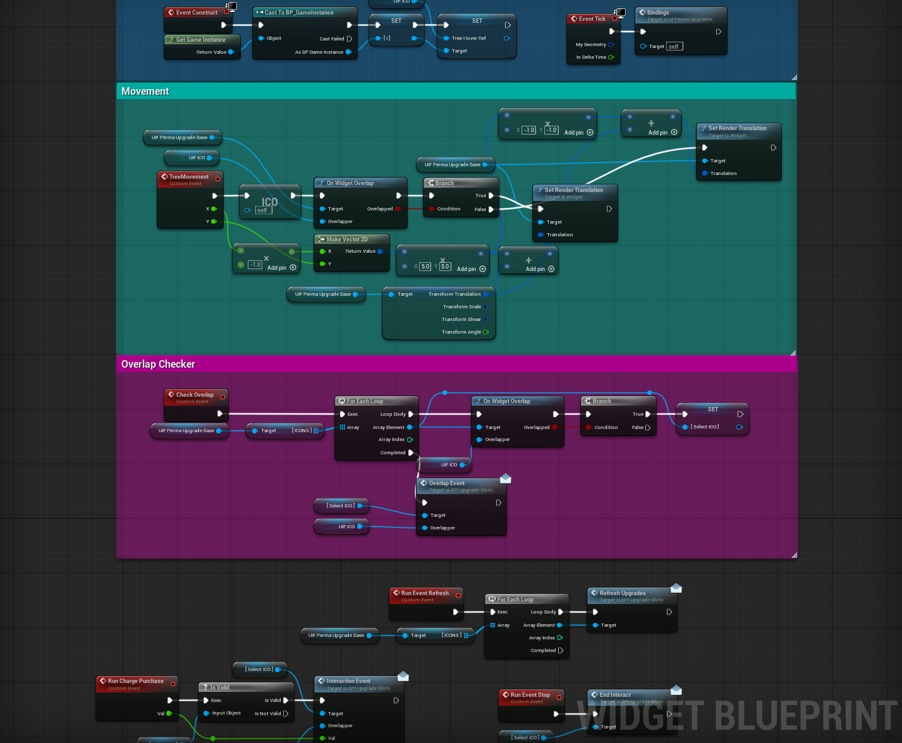
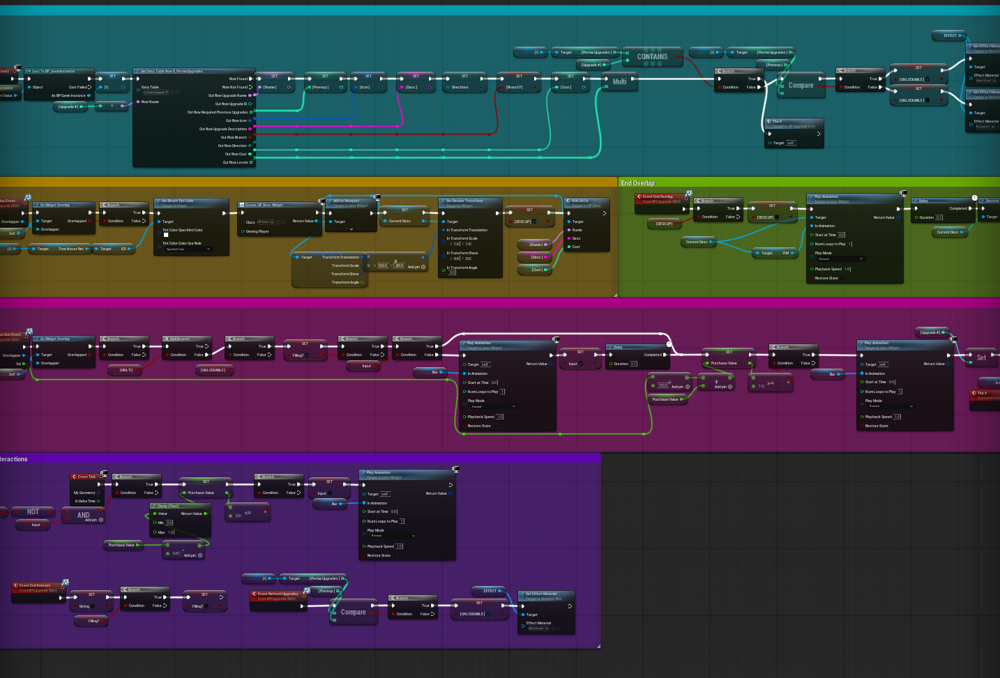

As the LEAD PROGRAMMER for this assignment, I've been tasked with taking the charge on programming our game, dealing with the github and build, as well as making sure the other programmers stay on track!
Below is my development process, detailing what I did, how I contributed to the project, how I did it, and what challenges I faced, updates will be posted on a Sprint-by-Sprint basis
Althought this was only our first sprint, a point where many people like to take their time and get their projects off of the ground, I was determined to make sure me and my team didn't get lazy, so I hit the ground running right away. This sprint I completely 35 cards, all of which were 1 point, and I got quite a lot done in the project to show this!
The first thing I worked on after getting the github and unreal project created was player movement. In the design for this game, the player has to control their robot from outside of the mech, so the controller for the player was incredibly important, I wanted it to have lots of movement options for getting around, and I think nothing shows this off better than how I programmed the rocket boost!

As you can see in the video above, we decided to make the movement system rather fast paced to accout for how the player will be jumping around from building to building to get a good angel for controlling the robot, which I think the strafing definitely helps with, espeically since I made it possible to do mid air, which'll allow the player to use them in conjunction with the rocket boosts to get a really cool effect and shooting themselves around the map'

Moving on from the player movement, one of the most important parts about our game is taking control of the robot, so I wanted to make that as seamless as possible, luckily, I'd already perfected a system for smooth camera movements and points from previous projects, making use for a map variable I was able to create a blueprint type for camera locations, get references to every one stored in a map, and then call them using a name at any point, which allows for really easy references to points for easing between!
This camera system makes it really easy for the smooth camera transition from 3rd person player to 1st person robot control, combined with the turning to face the robot and the following them provides a really nice smooth movement that I think looks really good and feels really good!


To go along with this, something I had a little bit of trouble with was getting the robot movement working, originally I intended to simply use a regular movement call similar to the player, but I had some trouble getting that working based on how the character movement controller likes to work, so I eventually settled for having movement in tick and turning on a boolean toggle, which I know isn't the best way to go about doing this, but for my use case it worked best and doesn't have any issues!


The thing I had probably the most trouble with had to be the upgrade tree system I made, I've made an upgrade tree before for a previous project on mobile, so I figured it'd be pretty similar, but it ended up being quite different and very hard, originally I wanted the cursor to jump between upgrade icons and lock to them, but quickly found that was much too hard and decided to pivot, but then learned that Unreal doesn't natively contain support for detecting Widget overlaps, which I then had to program myself which was quite the challenge, especially with the math involved, but eventually I got it down

After I got the widget overlap working, I still had a lot of issues with actually getting a references to WHICH widget you were overlapping, overall, I think the upgrade tree as a system took me longer than all of the other systems I worked on this sprint combined, it took a long time to deal with all of the issues that popped up, but eventually I found a workaround that was perfect for our use case and works perfect every single time with no bugs, and I think I'm really happy with how it turned out! (Mind the Programmer Art!)


Overall, I think this was a fnatastic first sprint, I think 35 Points was a great first start but I really want to try and hit an even higher point count as I think I can do even better!